Sexta-feira, 21 de novembro. Sir Edmund Blackwood foi encontrado morto na biblioteca às 22h55. A polícia já tem uma teoria.
Confidencial · não abra a solução
2 jogadores2h a 2h30Dificuldade média/difícilSomerset, Inglaterra
Antes de começarComo jogar
Vocês são dois investigadores contratados pelo escritório Pike & Harlow para revisar o inquérito antes da audiência de instrução. Têm duas horas. O que a polícia concluiu pode estar errado — e alguém nesta casa conta com isso.
Detetive A — Cena & Cronologia
Responsável pelas fotos da cena, pelo laudo médico, pelo relógio parado, pelos registros telefônicos e pela linha do tempo. Confira cada horário contra uma segunda fonte.
Detetive B — Documentos & Pessoas
Responsável pelos dossiês, declarações, cartas, testamento, caderno cifrado e pela tabela de álibis. Cruze o que cada suspeito diz com o que os papéis provam.
O que há neste dossiê
Briefing, planta da mansão e laudo policial preliminar
Seis dossiês de suspeitos, com declaração e um segredo selado
Quinze provas numeradas (de PROVA 01 a PROVA 15)
Cinco puzzles encadeados e uma ficha de acusação
Sistema de dicas em três níveis — no fim do caderno
As três regras
Não abram o PDF de solução até terem preenchido a ficha de acusação. Cada puzzle tem dicas escalonadas; usem-nas antes de desistir.
Nada é prova sozinho. Toda conclusão precisa de duas fontes independentes — uma declaração e um documento, ou um documento e um objeto.
Mentir não é matar. Pelo menos três pessoas escondem algo nesta casa. Descubram o que cada mentira protege antes de confundi-la com culpa.
0–40 min
Cena, laudo e planta. Fixem a hora da morte e a arma aparente.
40–95 min
Dossiês e provas documentais. Marquem quem mentiu e sobre o quê.
95–130 min
Puzzles 1 a 4, linha do tempo e acusação final.
Materiais: caneta e lápis. Podem (e devem) escrever neste caderno: as tabelas de trabalho foram deixadas em branco de propósito.
Caso Mansão Blackwood · Dossiê do jogop. 2
Documento 00O briefing
PIKE & HARLOW — SOLICITORS 12 Gray's Inn Square, Londres · 22 de novembro
Ao cuidado dos investigadores contratados, Assunto: óbito de Sir Edmund Blackwood — revisão pré-audiência
Sir Edmund Blackwood, 71 anos, foi encontrado morto na biblioteca da sua casa em Somerset na noite de ontem, 21 de novembro, por volta das 22h55. A governanta, Clara Vidal, ouviu um estrondo, desceu e encontrou o corpo ao pé da poltrona, com uma ferida na cabeça e o candelabro de bronze caído a um metro e meio de distância.
A polícia local tratou o caso, nas primeiras horas, como um assalto que deu errado. O inspetor responsável quer encerrar o inquérito antes da audiência de segunda-feira. A família — e, francamente, este escritório — não está convencida. O testamento de Sir Edmund movimenta uma fortuna considerável, e a casa estava cheia.
Vocês têm acesso ao dossiê completo: laudo preliminar, fotografias, objetos apreendidos, registros telefônicos, documentos pessoais e as declarações dos seis presentes. Têm também um caderno de Sir Edmund que a polícia classificou como "rabiscos ilegíveis".
"Não quero saber quem a polícia acha que foi. Quero saber quem foi. E quero saber antes de segunda-feira, porque depois da audiência o caso fecha e o assassino herda o silêncio da casa."
— Aldous Pike, sócio sênior
A casa naquela noite
Além da vítima, estavam na propriedade seis pessoas: a segunda esposa, o filho do primeiro casamento, o médico da família, a governanta, o sócio de negócios e a secretária particular. Nenhum funcionário de fora dormia na casa. O portão de serviço estava trancado; o portão principal, com câmera, registrou cada entrada e saída.
O que a polícia afirma
Morte por traumatismo craniano
Hora da morte: 22h43 (relógio parado)
Arma: candelabro de bronze
Motivo: roubo interrompido
O que vocês devem provar
Quem, com que meio, com que oportunidade
E por que a cena foi montada daquele jeito
Caso Mansão Blackwood · Dossiê do jogop. 3
Documento 01A casa e a vítima
Mansão Blackwood, fachada norte, ao anoitecer
Sir Edmund Blackwood
71 anos. Patriarca da família Blackwood, dono de uma fortuna construída em navegação e participações industriais. Viúvo de Helena (morta há doze anos), casado em segundas núpcias com Vitória. Cardíaco, sob acompanhamento do Dr. Salles há três décadas.
Nos últimos meses, Edmund andou inquieto: mudou o testamento duas vezes, demitiu um contador, cancelou uma viagem e passou a trancar-se no escritório até tarde. Na quinta-feira, mandou instalar uma fechadura nova no cofre da biblioteca.
Personalidade
Metódico, desconfiado, afeito a registros. Anotava tudo — horários, conversas, despesas. Era o tipo de homem que guarda recibos de doze anos atrás.
Os seis presentes
1
Vitória Blackwood, 42 Segunda esposa
2
Rafael Blackwood, 38 Filho do primeiro casamento
3
Dr. Henrique Salles, 58 Médico da família
4
Clara Vidal, 55 Governanta
5
Sérgio Kloss, 61 Sócio de negócios
6
Isabel Ferraz, 30 Secretária particular
Jantar de sexta-feira, 19h30 — a última refeição de Sir Edmund com os seis presentes
Caso Mansão Blackwood · Dossiê do jogop. 4
Documento 02Planta do pavimento térreo
A biblioteca ocupa a ala leste. Tem uma porta para o corredor e uma porta de serviço para a galeria. A janela estava fechada por dentro. Não há passagem entre a biblioteca e a cozinha.
Observação da governanta: "A porta de serviço da galeria estava trancada por dentro, com a chave na fechadura. Eu mesma a tranquei às 21h. A janela da biblioteca também estava fechada."
POLÍCIA DE SOMERSET — DIVISÃO CRIMINAL INQUÉRITO 21/11-BLACKWOOD
Vítima: Sir Edmund Blackwood, 71 anos Local: Biblioteca, Mansão Blackwood, Ashcombe Comunicação: 22h58, pela governanta Clara Vidal Perito responsável: Dr. Aline Duarte Investigador: Insp. Margot Vance
Posição do corpo: decúbito dorsal, ao pé da poltrona de leitura, cabeça voltada para a lareira. Braço direito estendido sobre o tapete.
Ferimento: laceração de aproximadamente 6 cm na região parietal esquerda. Bordas irregulares compatíveis com objeto contundente de borda dura. Não há fratura deprimida detectável no exame externo.
Objeto compatível: candelabro de bronze de três braços, encontrado a 1,5 m do corpo, sobre o tapete. Sem marcas de sangue visíveis. Apreendido.
Hora da morte: estimada em 22h43, com base no relógio de pé da biblioteca, parado nesse horário com o vidro estilhaçado, e no rigor mortis inicial.
Cena: gaveta da mesa de apoio aberta; papéis no chão; cofre fechado e intacto. A janela estava fechada por dentro. Nenhum sinal de arrombamento nas portas.
Hipótese: a vítima interrompeu uma tentativa de furto; o intruso golpeou-a com o candelabro e fugiu pela porta de serviço. Solicita-se verificação de pegadas no jardim.
A porta de serviço estava trancada por dentro, com a chave na fechadura. Nenhuma pegada foi encontrada no jardim.
O candelabro não tem sangue. Uma ferida de 6 cm deveria sangrar.
O relógio parado é conveniente demais: um relógio caído marca a hora em que caiu, não necessariamente a hora em que alguém morreu.
O relatório toxicológico foi solicitado e ainda não chegou. A audiência é segunda-feira.
Caso Mansão Blackwood · Dossiê do jogop. 6
Suspeito 01 de 06
Vitória Blackwood
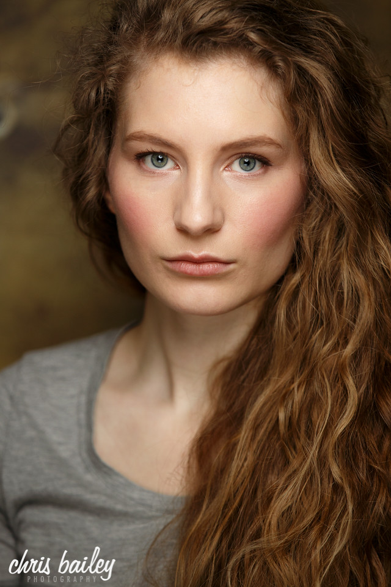
Vitória, 42 — fotografia de arquivo
Idade: 42 Função: segunda esposa Na casa há: 5 anos Relação com a vítima: casada
"Às 22h05 eu subi. Tomei banho, deitei e fiquei no quarto. Não ouvi nada — o quarto é no fim do corredor. Só desci quando a Clara gritou."
Quem é
Atriz de teatro antes do casamento, vinte e cinco anos mais nova que Edmund. Conheceu-o numa temporada em Bath. O casamento foi rápido e, para a família, escandaloso. Mantém um apartamento em Londres em seu nome — pago pela vítima, segundo o contador.
O que está em jogo
O testamento de Edmund lhe garante o usufruto da mansão enquanto viúva e 30% do patrimônio. Se o divórcio tivesse sido pedido, ela sairia com uma fração disso. E há rumores de que Edmund tinha um envelope com fotografias.
Declaração sobre a noite
Jantou com todos, tomou café na sala de estar e subiu às 22h05. Diz que não desceu até 22h55. Diz que não ouviu o relógio cair, embora o quarto do casal fique exatamente acima da biblioteca.
Verificação
Nenhuma testemunha ocular no corredor superior. A câmera do portão registrou movimento às 22h40 — falta saber de quem.
SEGREDO (só revelar se confrontada com prova): Vitória não estava sozinha no quarto. Marcos, o motorista, entrou pelo portão de serviço às 22h40 e só saiu depois da chegada da polícia. Ela mentiu — mas sobre o quê, exatamente?
Caso Mansão Blackwood · Dossiê do jogop. 7
Suspeito 02 de 06
Rafael Blackwood
Rafael, 38 — fotografia de arquivo
Idade: 38 Função: filho do primeiro casamento Na casa há: hóspede Relação com a vítima: filho
"Saí às 21h15 para beber. Não tinha nada para conversar com ele. Voltei quando o Tomás me ligou, por volta das 23h05."
Quem é
Filho de Helena, a primeira esposa. Trabalhou na empresa da família por seis anos, saiu depois de uma discussão que ninguém comenta. Desde então vive de rendimentos e de empréstimos. Deve cerca de um milhão e duzentos mil a três casas de apostas e a um agiota de Bristol.
O que está em jogo
Edmund havia ameaçado deserdá-lo na semana anterior, depois de descobrir que Rafael usara ações da empresa como garantia. O testamento atual destina-lhe 15% — pouco mais do que a dívida.
Declaração sobre a noite
Saiu de carro às 21h15, foi ao pub The Hollow Crown, na vila, e ficou lá até ser chamado. Não voltou à casa antes das 23h05. Não sabe de nada.
Verificação
O recibo do pub e o extrato do cartão sustentam a saída. Falta confirmar se ele permaneceu no pub durante toda a janela crítica.
SEGREDO (só revelar se confrontado com prova): Rafael assinou o nome do pai numa procuração de ações. Edmund descobriu na quinta-feira e marcou uma reunião com os advogados para segunda.
Caso Mansão Blackwood · Dossiê do jogop. 8
Suspeito 03 de 06
Dr. Henrique Salles
Salles, 58 — fotografia de arquivo
Idade: 58 Função: médico da família Na casa há: 30 anos de serviço Relação com a vítima: médico e amigo
"Levei o uísque e a medicação dele à biblioteca às 22h20. Ele tomou a cápsula na minha frente. Saí às 22h30 e subi para o meu quarto. Estava tudo bem com ele."
Quem é
Cardiologista, médico pessoal de Edmund desde os quarenta anos do patriarca. Assinou o atestado de óbito de Helena, primeira esposa, há doze anos — morte por "insuficiência cardíaca". É viúvo, sem filhos, e dorme na casa sempre que há visitas.
O que está em jogo
Nada óbvio. Salles é o único dos seis que não ganha nada com a morte — o que ele mesmo fez questão de lembrar à polícia. A amizade, porém, andava estranha: Edmund cancelou duas consultas em outubro e pediu uma segunda opinião a um cardiologista de Londres.
Declaração sobre a noite
Jantou com todos. Atendeu um telefonema às 21h40. Foi à biblioteca às 22h20 levar uísque e digoxina, como fazia todas as noites. Diz que ficou dez minutos, conversaram sobre o tempo, e ele subiu.
Verificação
Nenhuma testemunha entre 22h30 e 22h52. A governanta afirma tê-lo visto no corredor da biblioteca às 22h52, pálido, com a bolsa médica na mão — horário que ele não menciona.
SEGREDO (só revelar se confrontado com prova): Salles assinou o óbito de Helena. Edmund guardava uma carta do farmacêutico Afonso Reis sobre compras de digoxina em nome de um paciente que não existe.
Caso Mansão Blackwood · Dossiê do jogop. 9
Suspeito 04 de 06
Clara Vidal
Clara, 55 — fotografia de arquivo
Idade: 55 Função: governanta Na casa há: 30 anos Relação com a vítima: empregada
"Das 22h30 às 22h50 eu estava na despensa, conferindo a prataria com o Tomás. Ouvimos o relógio cair — um estrondo seco. Foi por volta das 22h45. Quando terminei, desci e encontrei Sir Edmund."
Quem é
Entrou na casa aos 25 anos, como camareira de Helena. Promovida a governanta depois da morte da primeira esposa. Conhece a rotina da mansão melhor que qualquer um da equipe.
O que está em jogo
Edmund descobrira o desaparecimento de peças de prataria antiga e, na quinta-feira, avisou Clara de que a dispensaria sem carta de recomendação depois do Natal. Uma cláusula do testamento também reduzia sua pensão de 30 anos de serviço a uma quantia simbólica.
Declaração sobre a noite
Serviu o jantar, recolheu a mesa, trancou a porta de serviço às 21h. Das 22h30 às 22h50 esteve na despensa com o jardineiro. Às 22h55 desceu ao hall, estranhou o silêncio e encontrou o corpo.
Verificação
O jardineiro Tomás confirma a presença dela na despensa durante a janela crítica. Clara não teria como estar na biblioteca — mas foi ela quem trancou a porta de serviço.
SEGREDO (só revelar se confrontado com prova): Clara vinha desviando prataria há meses, para pagar o tratamento do irmão. A demissão significaria a ruína da família dela.
Caso Mansão Blackwood · Dossiê do jogop. 10
Suspeito 05 de 06
Sérgio Kloss
Sérgio, 61 — fotografia de arquivo
Idade: 61 Função: sócio de negócios Na casa há: hóspede Relação com a vítima: sócio há 18 anos
"Passei a noite no hall, ao telefone com minha esposa, que está em Londres. Desliguei às 22h46 — podem conferir o registro. Depois subi e não desci mais."
Quem é
Sócio minoritário da Blackwood Holdings, responsável pela área de investimentos. Casado, dois filhos adultos. Homem de hábitos caros e reputação impecável — até agora.
O que está em jogo
Edmund descobrira, numa auditoria interna, um buraco de quatro milhões em contas administradas por Sérgio. Havia reunião do conselho na segunda-feira — e um rascunho de denúncia à polícia no escritório de Edmund.
Declaração sobre a noite
Jantou, retirou-se para o hall às 22h28 para telefonar, permaneceu na linha até 22h46, subiu e não viu mais ninguém até a chegada da polícia.
Verificação
O registro telefônico confirma chamada de 18 minutos saindo do hall no intervalo declarado. O número, porém, não é de Londres residencial — é de uma corretora em Mayfair.
SEGREDO (só revelar se confrontado com prova): Sérgio mentiu sobre com quem falava. Estava implorando prazo ao corretor que cobria o desfalque. O telefone do hall fica a dez passos da biblioteca — mas à vista de quem estivesse no corredor.
Caso Mansão Blackwood · Dossiê do jogop. 11
Suspeito 06 de 06
Isabel Ferraz
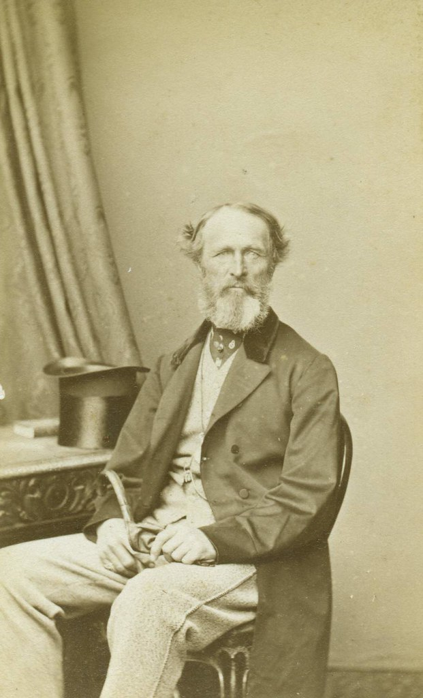
Isabel, 30 — fotografia de arquivo
Idade: 30 Função: secretária particular Na casa há: 2 anos Relação com a vítima: empregada
"Fiquei no escritório a noite inteira, datilografando a correspondência. Só saí quando ouvi o grito da Clara. Não passei pela biblioteca em momento nenhum."
Quem é
Contratada há dois anos para organizar o arquivo pessoal de Edmund. Discreta, eficiente, mora na vila. Nos últimos meses, passou a acompanhar Edmund a Londres com frequência — o que a família notou e comentou.
O que está em jogo
Isabel está grávida de dez semanas. Edmund é o pai. Ela não consta no testamento, e o envelope que Edmund mandou preparar com o advogado na quinta-feira poderia mudar isso — ou encerrá-lo de vez.
Declaração sobre a noite
Jantou com todos, recolheu-se ao escritório às 21h30 e lá ficou. Não ouviu o relógio cair. Não viu ninguém no corredor.
Verificação
O escritório fica no extremo oposto da casa. Clara, porém, afirma tê-la visto descendo a escada de serviço às 22h38, com um envelope na mão — o que contradiz a versão de que nunca saiu.
SEGREDO (só revelar se confrontado com prova): Isabel não estava datilografando. Estava no quarto de Edmund, procurando o rascunho do novo testamento. Encontrou — e guardou.
Caso Mansão Blackwood · Dossiê do jogop. 12
Anexo AÍndice das provas
Cada prova tem um número. Uma conclusão só se sustenta quando cruza duas provas de naturezas diferentes — por exemplo, um objeto e um documento, ou um registro e uma declaração.
Nº
Prova
Tipo
02
Fotografias da cena do crime
Fotografia
03
Candelabro de bronze (arma aparente)
Objeto
04
Copo de uísque com resíduo
Objeto / química
05
Frasco de digoxina e receita médica
Objeto / documento
06
Relógio de pé parado às 22h43
Objeto
07
Registro telefônico do hall
Documento
08
Recibo do pub The Hollow Crown
Documento
09
Fotograma da câmera do portão, 22h40
Imagem
10
Carta do farmacêutico e obituário de Helena
Documento
11
Caderno de Sir Edmund (página cifrada)
Documento
12
Cofre da biblioteca e conteúdo
Objeto / documento
13
Testamento vigente
Documento
14
Tabela de declarações e horários
Documento de trabalho
15
Laudo toxicológico (chegou às 04h20)
Documento — lacrado
Regra do envelope lacrado
A PROVA 15 está num envelope lacrado com a inscrição "abrir somente após o Puzzle 3". Vocês podem abri-la antes — mas ela entrega uma virada de mesa que o Puzzle 3 foi desenhado para fazer vocês descobrirem sozinhos. A escolha é de vocês.
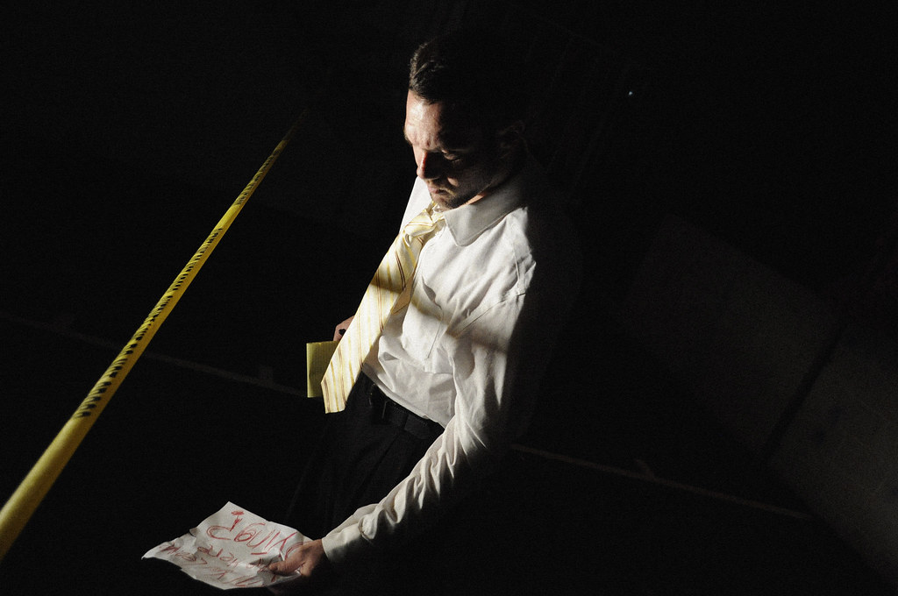
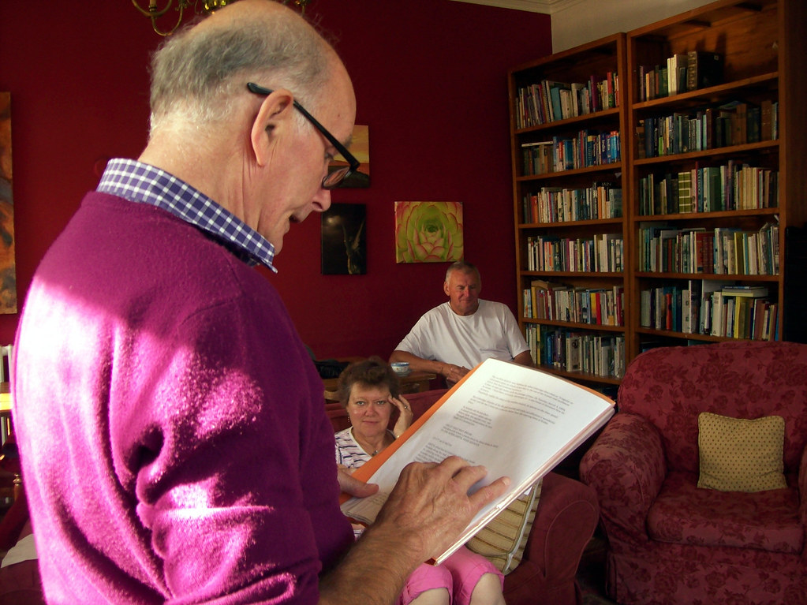
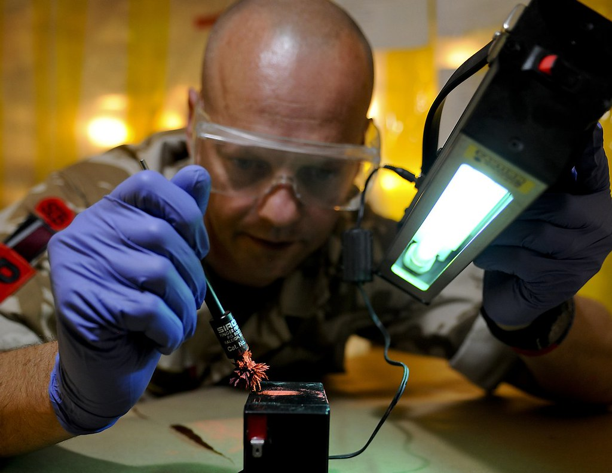
Caso Mansão Blackwood · Dossiê do jogop. 13
Prova 02 · fotografias da perícia, 23h05
A cena do crime
Foto 02-A — vista geral da biblioteca
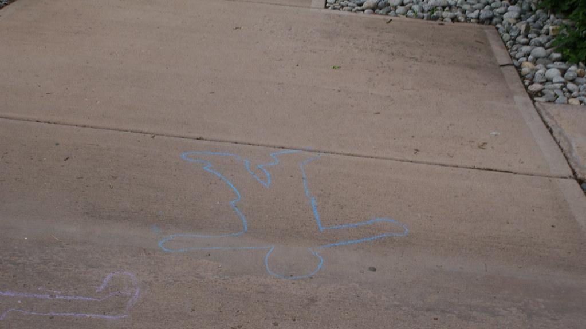
Foto 02-B — posição do corpo, ao pé da poltrona
Foto 02-C — estantes intactas; nenhum livro removido
Observações do perito
Gaveta da mesa de apoio aberta, mas com dinheiro dentro (trinta e duas libras).
Papéis espalhados no tapete: contas domésticas, nenhum documento relevante.
O cofre embutido na estante estava fechado. Não havia sinais de arrombamento.
Janela fechada por dentro, sem marcas. Porta de serviço trancada, chave na fechadura.
O copo de uísque estava na mesa, ao lado da poltrona — com uísque pela metade.
O relógio de pé caíra de lado; vidro estilhaçado; ponteiros parados em 22h43.
O candelabro estava no tapete, a 1,5 m do corpo, sem sangue e sem marcas de impacto.
Primeira contradição
Se houve luta — e o candelabro sugere que houve —, por que a gaveta ainda tem dinheiro, o cofre está intacto, os livros estão no lugar e a janela está trancada por dentro? Um assaltante que foge sem levar nada, por uma porta trancada, é uma hipótese que precisa de muita fé.
Caso Mansão Blackwood · Dossiê do jogop. 14
Provas 03 e 04 · objetos apreendidos
O candelabro e o copo
Prova 03 — candelabro de bronze, três braços, 2,4 kgProva 04 — copo de uísque, metade consumida
Análise do candelabro
Peso: 2,4 kg; borda dura, sem quinas vivas.
Nenhuma gota de sangue. Nenhum fio de cabelo.
Poeira uniforme na base — não foi limpo depois de cair.
Compatível com o ferimento, mas sem transferência biológica.
Análise do copo
Uísque escocês de malte, teor alcoólico 46%.
Resíduo esbranquiçado no fundo, aderido ao vidro.
Sem impressões digitais utilizáveis (limpo com pano).
Enviado ao laboratório para análise química.
Pergunta que a perícia não respondeu: um golpe de 2,4 kg na cabeça de um homem de 71 anos produz sangramento abundante e, quase sempre, fratura. O laudo preliminar não descreve nem uma coisa nem outra. Guardem essa observação.
Caso Mansão Blackwood · Dossiê do jogop. 15
Prova 05 · objetos e receita
O frasco de digoxina
Prova 05-A — frasco apreendido na mesa de cabeceira de Sir Edmund
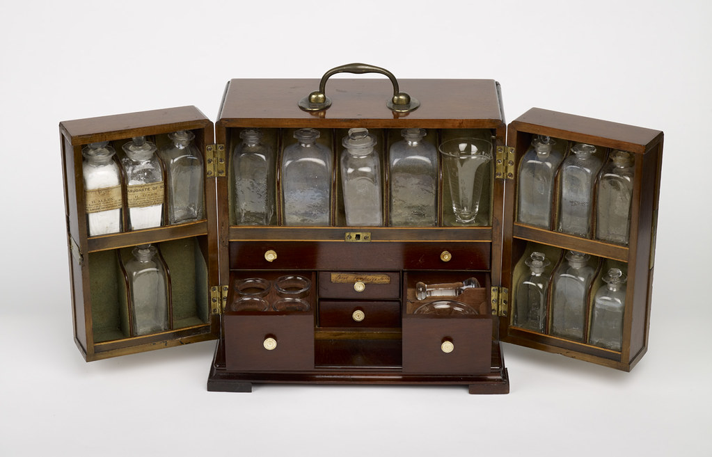
Farmácia Reis, Ashcombe — fornecedora da família
Dados do frasco
Medicamento
Digoxina 0,25 mg — cápsulas
Paciente
Sir Edmund Blackwood
Prescrição
1 cápsula ao dia, à noite
Data da receita
10 de novembro
Quantidade
30 cápsulas
Cápsulas restantes
11 (onze)
Médico
Dr. Henrique Salles
Façam a conta
A receita é do dia 10. Hoje é dia 21. Se Sir Edmund tomava uma cápsula por noite, quantas deveriam restar no frasco na noite do crime? Quantas faltam, de fato? A diferença é a pergunta do Puzzle 3.
Nota do legista: a digoxina é um medicamento cardíaco de uso crônico. Em dose terapêutica, salva. Em dose maciça, provoca arritmia fatal. A margem entre uma coisa e outra é estreita — e quem conhece essa margem é quem receita.
Caso Mansão Blackwood · Dossiê do jogop. 16
Prova 06 · objeto
O relógio parado
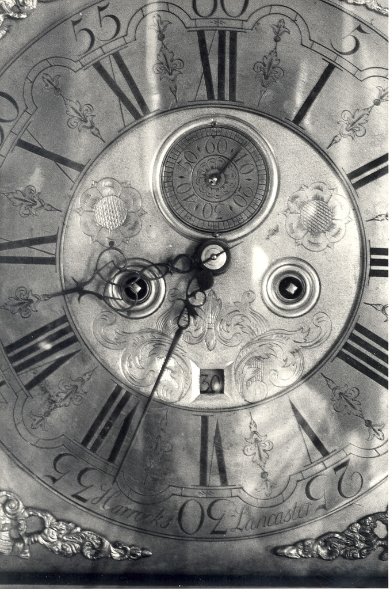
Prova 06-A — relógio de pé da biblioteca, caído de lado
Ficha técnica
Relógio de pé vitoriano, corda manual, pêndulo de latão. O vidro da portinhola estilhaçou no impacto. Os ponteiros pararam às 22h43. O mecanismo está intacto; o relógio foi parado pela queda, não por defeito.
O que um relógio prova
Prova a hora em que o relógio caiu. Se alguém o empurrou de propósito, prova a hora em que alguém o empurrou. Não prova a hora da morte. A polícia confundiu as duas coisas — e construiu toda a cronologia em cima disso.
Detalhe estranho
O relógio estava encostado à parede, atrás da poltrona. Para derrubá-lo, é preciso passar por trás da poltrona — não é o caminho natural de quem entra na sala, vê o corpo e foge.
Hora oficial x hora real
Fonte
Hora
O que mede
Relógio parado
22h43
Queda do relógio
Laudo preliminar
22h43
Hora da morte (por suposição)
Corpo encontrado
22h55
Comunicação à polícia: 22h58
Última vez visto vivo
22h20
Declaração do Dr. Salles
Caso Mansão Blackwood · Dossiê do jogop. 17
Prova 07 · registro telefônico
As chamadas do hall
Extrato da operadora referente à linha do hall da Mansão Blackwood, sexta-feira, 21 de novembro. A linha é compartilhada por toda a casa; não há ramais.
BT — REGISTRO DE CHAMADAS LINHA: 01749 22 88 41 · TITULAR: E. BLACKWOOD
Início
Duração
Destino
Número
21h31
12 min
Londres — residencial
020 7xxx 4412
22h28
18 min
Mayfair — comercial
020 7xxx 9903
22h52
1 min
Chamada não completada
—
23h04
2 min
Vila de Ashcombe
01749 22 110
Quem usou a linha
A linha do hall é a única da casa com acesso externo. O telefone fica sobre a mesa do hall, a dez passos da porta da biblioteca. Qualquer um podia usá-lo — mas à vista de quem estivesse no hall, no corredor ou na escada.
Cruzamentos
21h31 — Salles diz que atendeu um telefonema. Confere.
22h28–22h46 — Sérgio. Confere a duração; o número é de uma corretora.
22h52 — chamada de um minuto, não completada. Quem tentou ligar?
23h04 — Tomás liga para Rafael, na vila.
Pergunta: a chamada de 22h52 foi feita do hall — mas Clara afirma que, a essa hora, o hall estava vazio e ela vinha da despensa. Uma chamada não completada deixada no gancho, por um minuto, às 22h52. O que isso pode significar?
Caso Mansão Blackwood · Dossiê do jogop. 18
Provas 08 e 09 · recibo e imagem
O pub e o portão
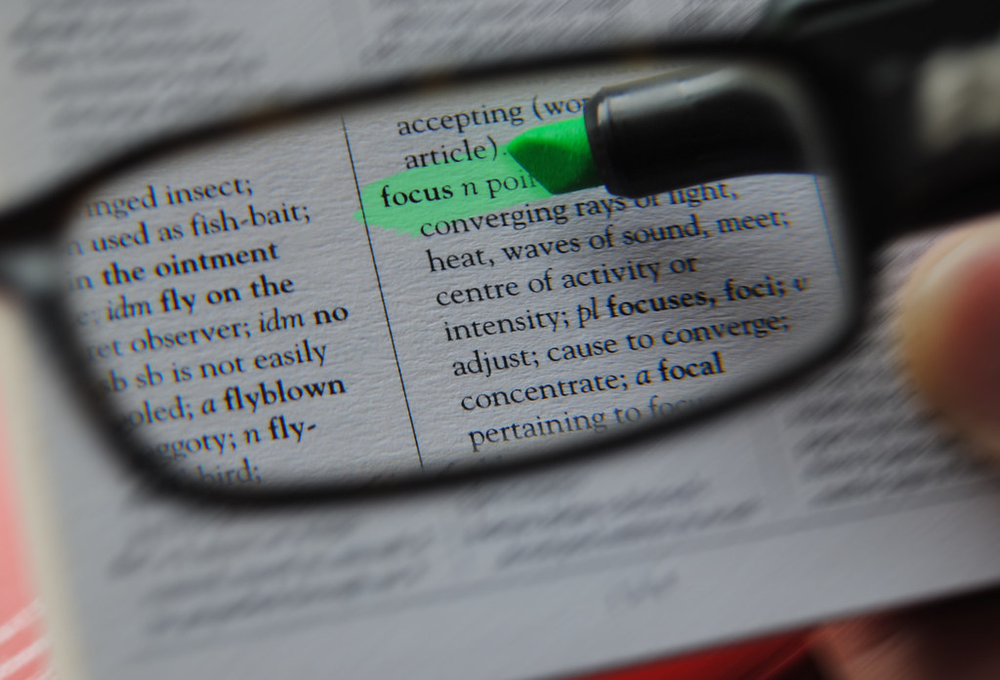
Prova 08 — recibo do The Hollow Crown, conferido com o extrato
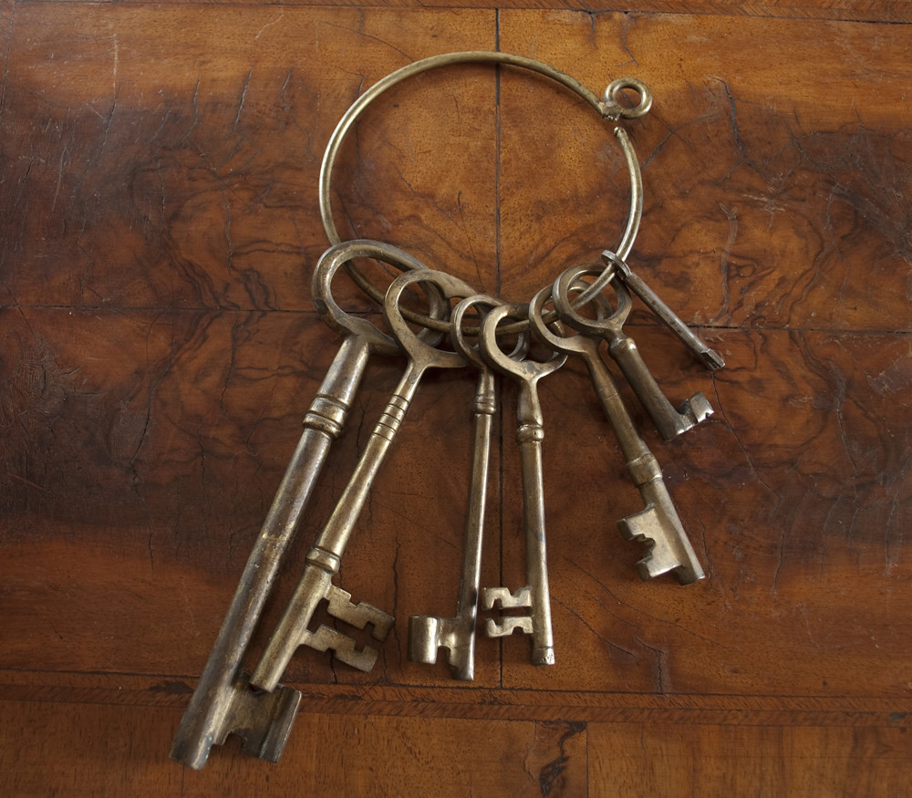
Chaves do portão de serviço, apreendidas com o motorista
THE HOLLOW CROWN — ASHCOMBE RECIBO NÃO FISCAL · 21/11 · 21h58
2 × uísque de malte ......... £ 19,40 1 × prato de carne ........... £ 14,00 TOTAL ....................... £ 33,40 Cartão: **** 4471 — R. BLACKWOOD
Declaração do barman, Sr. Peter Hale: "O Sr. Rafael chegou por volta das 21h25 e ficou no balcão. Não saiu antes de o jardineiro ligar, lá pelas onze e cinco. Lembro porque pagou a conta às 21h58 e ficou conversando comigo até o telefone tocar."
Prova 09 — fotograma da câmera do portão
Câmera fixa no portão principal, apontada para o pátio. Resolução baixa, sem áudio, gravação contínua. O fotograma das 22h40 mostra um veículo escuro entrando no pátio pelo portão de serviço. A placa não é legível. O carro tem a forma do sedã cinza usado pelo motorista da família, Marcos Vieira.
O registro tem ainda duas entradas: 23h07 (carro de Rafael retornando) e 23h12 (viatura da polícia). Nenhum outro movimento até o amanhecer.
Consequência direta: ninguém de fora entrou na propriedade depois das 22h40. Se o assassino é alguém de fora, teria de ter entrado antes e permanecido escondido — e não há pegadas no jardim. Se é alguém de dentro, não precisou sair.
Caso Mansão Blackwood · Dossiê do jogop. 19
Prova 10 · correspondência apreendida no escritório
A carta do farmacêutico
Farmácia Reis · Ashcombe 14 de outubro
Prezado Sir Edmund,
Escrevo-lhe a contragosto, e apenas porque o senhor foi sempre correto com esta casa. Há três meses venho aviando receitas de digoxina em quantidade superior à que o seu tratamento justifica. As receitas chegam assinadas pelo Dr. Salles, mas em nome de um paciente que não existe nos nossos registros: J. Prado.
Questionei o doutor em agosto. Ele disse que se tratava de um erro de digitação e que o senhor havia autorizado o aumento. Não tenho como verificar isso sem o senhor. Recuso-me a continuar aviando essas receitas até que o senhor mesmo me confirme.
Perdoe a ousadia. Prefiro perder um cliente a perder a consciência.
Afonso Reis
Anexo — recorte de jornal
Ashcombe Herald, 3 de março de 2014: "Faleceu ontem, aos 64 anos, Lady Helena Blackwood, primeira esposa de Sir Edmund Blackwood. O óbito foi atribuído a insuficiência cardíaca. A família agradece as manifestações e pede privacidade. O atestado foi assinado pelo Dr. Henrique Salles, médico da família."
Por que isso importa
A mesma pessoa assinou o óbito de Helena e receita a digoxina de Edmund. A mesma substância aparece nas duas histórias. Doze anos de distância — e um farmacêutico que se recusou a continuar aviando.
Pergunta: Edmund recebeu esta carta em 14 de outubro. O que ele fez com ela? O que ele faria na segunda-feira? E por que a carta estava no cofre da biblioteca, e não no escritório?
Caso Mansão Blackwood · Dossiê do jogop. 20
Prova 11 · documento pessoal
A página cifrada
Encontrada aberta sobre a mesa de Edmund, entre as contas domésticas. A polícia a classificou como "rabiscos ilegíveis". O cabeçalho, porém, está em português claro.
21 de novembro
Se eu não estiver aqui amanhã, a chave é o nome desta casa. Sempre foi.
RK BHOM IK BAMJSKAKQ MHDKI M AMWQK.
M IKCEAM RBLK.
DKHKJB JBM IMQQKT CM AMQBABM.
RBHHKR KRSBUB HB.
AMWQK 1703.
Chave: B L A C K W O D _ _ _ _ _ _ _ _ _ _ _ _ _ _ _ _ _ _
Preencham as dezoito posições restantes com as letras do alfabeto que ainda não aparecem, na ordem alfabética. Os espaços separam palavras, como no texto original. Mantenham os pontos.
Como funciona a cifra
É uma substituição simples: cada letra do texto original foi trocada pela letra que ocupa a mesma posição na linha de baixo. A primeira linha é o alfabeto comum; a segunda, a chave. A letra A vira B, a letra B vira L, a letra C vira A — e assim por diante.
Folha de decodificação
Texto
R K B H O M I K
Decifrado
Escrevam a tradução completa na ficha de trabalho do Puzzle 2.
Caso Mansão Blackwood · Dossiê do jogop. 21
Prova 12 · objeto e conteúdo
O cofre da biblioteca
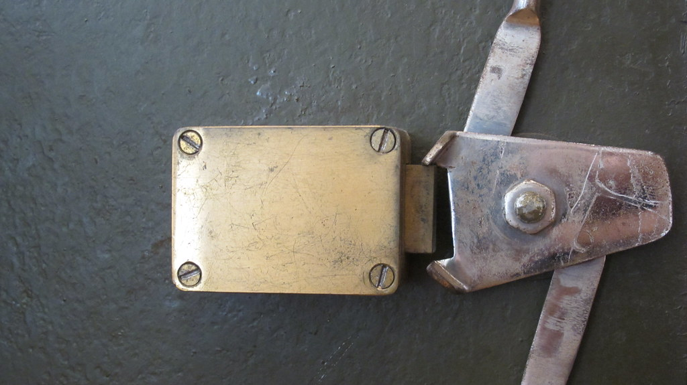
Prova 12 — cofre embutido na estante, fechadura de três discos
Ficha do cofre
Combinação de três discos, quatro algarismos cada.
Fechado na noite do crime; aberto pela perícia na manhã seguinte.
Nenhum sinal de arrombamento ou de tentativa.
Edmund trocou a fechadura na quinta-feira.
O que havia dentro
A carta de Afonso Reis (Prova 10), dobrada em quatro.
Certidão de casamento com Helena, datada de 17 de março de 1978.
Doze receitas de digoxina em nome de "J. Prado", assinadas por H. Salles.
Cópia do atestado de óbito de Helena Blackwood.
Um envelope pardo lacrado, endereçado a "Pike & Harlow — para abrir em caso de meu falecimento".
Uma caderneta de anotações com datas e valores.
Conteúdo do envelope lacrado
Uma única folha, manuscrita:
"Se eu morrer de repente, não foi do coração. Peçam ao Dr. Salles que explique as receitas em nome de J. Prado e o que aconteceu com Helena na noite de 2 de março de 2014. Ele estava lá. Ele sempre esteve lá. — E.B."
Observação: os três discos giram e a combinação é de quatro algarismos por disco — o caderno cifrado fornece o número. O cofre só foi aberto na manhã seguinte porque ninguém, na noite do crime, sabia a combinação. Quem matou Edmund não precisava do que estava lá dentro: precisava que ninguém mais lesse.
Caso Mansão Blackwood · Dossiê do jogop. 22
Prova 13 · documento jurídico
O testamento
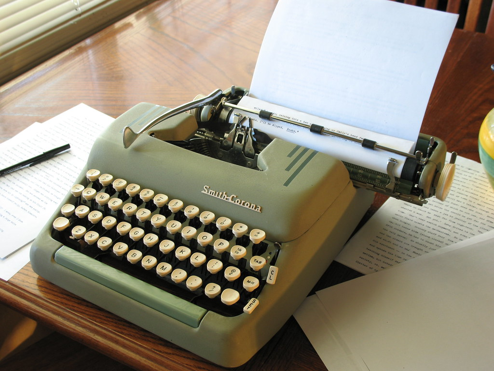
Cópia datilografada do testamento vigente, arquivada no escritório
ÚLTIMA VONTADE E TESTAMENTO SIR EDMUND BLACKWOOD · 4 DE SETEMBRO
Cláusula 2. À minha esposa, Vitória Blackwood, o usufruto da Mansão Blackwood enquanto permanecer viúva, e trinta por cento do patrimônio líquido.
Cláusula 3. A meu filho, Rafael Blackwood, quinze por cento do patrimônio líquido, em fideicomisso, com vedação de alienação por cinco anos.
Cláusula 4. A Clara Vidal, governanta, uma pensão vitalícia de sessenta libras mensais, em reconhecimento aos serviços prestados.
Cláusula 5. A Isabel Ferraz, secretária, a quantia única de cinco mil libras.
Cláusula 6. Não faço disposição alguma em favor de Henrique Salles, que já foi suficientemente remunerado por seus serviços.
Cláusula 7. A Sérgio Kloss, nenhuma disposição. A sociedade será auditada.
Rascunho de alteração, não assinado, encontrado na gaveta de Edmund: "Revisar cláusulas 2, 4 e 5. Incluir provisão para a criança. Reduzir Kloss a zero — já está. Rever tudo depois da auditoria."
O que o testamento faz
Dá a quase todos um motivo. Vitória perde tudo com um divórcio; Clara perde a pensão; Rafael perde a liberdade financeira; Isabel fica com uma soma irrisória; Sérgio fica sem nada.
O que o testamento não faz
Não indica quem matou. Motivo não é oportunidade. Cinco pessoas têm motivo; a pergunta é quem teve vinte e dois minutos sem testemunha.
Caso Mansão Blackwood · Dossiê do jogop. 23
Prova 14 · documento de trabalho
Declarações e horários
Resumo das versões oficiais. As colunas fonte e conflito estão parcialmente preenchidas pela polícia — e parcialmente em branco, de propósito. Completem no Puzzle 1 e no Puzzle 4.
Pessoa
Versão declarada (22h20–23h00)
Fonte de verificação
Conflito
Vitória
No quarto, sozinha, das 22h05 às 22h55.
Câmera do portão, 22h40 (Prova 09)
Rafael
No pub desde 21h25; voltou às 23h05.
Recibo 21h58 + barman (Prova 08)
Salles
Na biblioteca até 22h30; depois no quarto.
Nenhuma testemunha entre 22h30 e 22h52
Clara
Na despensa com Tomás, 22h30–22h50.
Declaração do jardineiro Tomás
Sérgio
No hall, ao telefone, 22h28–22h46.
Registro telefônico (Prova 07)
Isabel
No escritório, sozinha, desde 21h30.
Nenhuma. Clara a viu às 22h38 (escada de serviço).
Ficha de trabalho — janela crítica
A janela crítica do caso é 22h30–22h52. Para cada pessoa, escrevam: verificado, não verificado ou contradito. Só uma pessoa fica sem álibi verificável.
Pessoa
22h30
22h40
22h50
Situação
Vitória
Rafael
Salles
Clara
Sérgio
Isabel
Caso Mansão Blackwood · Dossiê do jogop. 24
Prova 15 · envelope lacrado · abrir após o Puzzle 3
Laudo toxicológico
Chegou ao escritório Pike & Harlow às 04h20 de sábado, por mensageiro. A polícia ainda não o anexou ao inquérito.
LABORATÓRIO FORENSE DE BRISTOL RELATÓRIO TOXICOLÓGICO — CASO 21/11-BLACKWOOD
Resultados:
Digoxina sérica: 6,8 ng/mL (faixa terapêutica 0,5–2,0; letal acima de 2,5)
Etanol: 0,11 g/dL
Demais triagens: negativas.
Conteúdo gástrico: resíduo de uísque com traços de digoxina e de excipiente de cápsula (amido de milho).
Exame da ferida craniana: laceração de 6 cm, sem fratura, sem hemorragia significativa, sem reação vital no tecido adjacente. Ausência de sangue nas vias aéreas e nos pulmões.
Conclusão: a morte foi causada por intoxicação aguda por digoxina, em dose maciça, administrada por via oral. A ferida craniana foi produzida post mortem, sem resposta vital — trata-se de encenação.
Dra. Helena Prado — patologista
O que muda
A hora da morte não é a hora em que o relógio caiu. A ingestão foi antes; a queda do relógio, depois.
O candelabro não matou ninguém. Ele serviu para que a cena parecesse um assalto violento.
A substância que matou estava no copo de uísque — e quem servia a medicação noturna tinha acesso a ela.
Quem encenou a cena conhecia a rotina da casa, sabia onde ficava o relógio e tinha motivo para apagar a hora real.
Atenção: o laudo prova o meio. Não prova a mão. Voltem ao Puzzle 1 com a nova janela de tempo e cruzem com o Puzzle 4.
Caso Mansão Blackwood · Dossiê do jogop. 25
Puzzle 1 de 5 · cronologia
A linha do tempo
Reconstruam a noite de 20h30 a 23h10. Usem as declarações (Prova 14), o registro telefônico (Prova 07), o recibo (Prova 08) e a câmera (Prova 09). Cada linha precisa de uma fonte — não vale "acho que".
Hora
O que aconteceu
Fonte
20h30
21h00
21h15
21h31
21h50
22h05
22h20
22h28
22h38
22h40
22h43
22h46
22h52
22h55
Perguntas do puzzle
O relógio caiu às 22h43. O que exatamente isso prova — e o que não prova?
Quem possui álibi verificável por documento ou testemunha independente entre 22h30 e 22h52?
Quem não possui? Há mais de uma pessoa nessa situação?
Se a morte foi por veneno no copo, qual é a janela real em que o copo esteve ao alcance de alguém?
Que contradição existe entre a declaração de Salles e a de Clara?
Não avancem enquanto não conseguirem apontar uma única pessoa cuja versão dos fatos é a única sem confirmação independente na janela crítica.
Caso Mansão Blackwood · Dossiê do jogop. 26
Puzzle 2 de 5 · criptografia
A cifra de Edmund
Edmund escreveu a chave no cabeçalho: o nome desta casa. A cifra usa uma palavra-chave para montar um alfabeto deslocado. Sigam os passos.
Passo 1 — Montem a chave
Escrevam BLACKWOOD e apaguem as letras repetidas (o segundo O, por exemplo). Depois completem com as letras restantes do alfabeto, em ordem. O resultado tem 26 letras e começa assim:
A B C D E F G H I J K L M
B L A C K W O D _ _ _ _ _
Passo 2 — Decifrem
RK BHOM IK BAMJSKAKQ MHDKI M AMWQK.
M IKCEAM RBLK.
DKHKJB JBM IMQQKT CM AMQBABM.
RBHHKR KRSBUB HB.
AMWQK 1703.
Passo 3 — Traduzam
Linha cifrada
Tradução
RK BHOM IK BAMJSKAKQ MHDKI M AMWQK.
M IKCEAM RBLK.
DKHKJB JBM IMQQKT CM AMQBABM.
RBHHKR KRSBUB HB.
AMWQK 1703.
Perguntas
O que Edmund queria que fosse encontrado? Onde?
Qual número abre o cofre — e o que ele significa?
Por que Edmund não escreveu isso em linguagem clara?
Quem, na casa, não precisava ler o caderno para saber o que havia no cofre?
Atenção: uma das linhas não fala de documentos. Fala de uma pessoa. Quando vocês a decifrarem, terão o nome de alguém — e uma data que liga essa pessoa à morte de outra mulher, doze anos antes.
Caso Mansão Blackwood · Dossiê do jogop. 27
Puzzle 3 de 5 · forense
O veneno, não o golpe
A polícia concluiu traumatismo craniano. O candelabro está no tapete, o relógio está parado, e ninguém duvidou. Vocês vão duvidar — com números.
A conta das cápsulas
Receita de 10/11: 30 cápsulas, 1 por dia. Noite do crime: 21/11. Sir Edmund tomava a medicação todas as noites, sem falhar.
Doses prescritas até 20/11
Doses que deveriam restar
Doses encontradas no frasco
11
Diferença não explicada
Cada cápsula tem 0,25 mg. Multipliquem a diferença por 0,25 para obter a dose extra, em miligramas.
A assinatura da ferida
6 cm de laceração, sem fratura.
Sem hemorragia significativa.
Sem reação vital no tecido ao redor.
Sem sangue nas vias aéreas.
Perguntem-se: o que um ferimento em vida deixaria que este não deixou?
Façam o laudo de vocês
Pergunta
Resposta
Causa da morte
Meio
Por que o candelabro não matou
Por que a cena foi montada
Quem tem acesso à substância
Três perguntas finais
Um golpe que não sangra, não fratura e não deixa reação vital foi dado quando?
Se a morte foi por veneno, por que alguém se daria ao trabalho de golpear um morto e derrubar um relógio?
Quem, naquela casa, podia entregar a Edmund uma dose maciça de digoxina sem levantar suspeita — e ainda por cima escolher o horário?
Depois de responderem, abram a PROVA 15 (envelope lacrado, p. 25). Se o laudo oficial confirmar o de vocês, vocês acabaram de virar o caso.
Caso Mansão Blackwood · Dossiê do jogop. 28
Puzzle 4 de 5 · interrogatório
Quem mentiu — e por quê
Pelo menos três pessoas mentiram sobre a noite. Mentira não é assassinato, mas toda mentira protege alguma coisa. Preencham a tabela: o que cada um escondeu, qual prova os desmente, e se essa mentira tem relação com a morte de Edmund.
Pessoa
Versão
Prova contrária
O que a mentira protege
Liga ao crime?
Vitória
Sérgio
Isabel
Salles
Perguntas de confronto
Vitória diz que estava sozinha. A câmera mostra o carro do motorista às 22h40. O motorista confirma que estava com ela. Isso a torna assassina — ou apenas adúltera?
Sérgio diz que falava com a esposa. O registro mostra uma corretora em Mayfair. Isso o torna assassino — ou apenas desesperado?
Isabel diz que não saiu do escritório. Clara a viu na escada de serviço. Isso a torna assassina — ou apenas herdeira em potencial?
Salles diz que saiu da biblioteca às 22h30. Clara o vê no corredor às 22h52. Quem mais, nessa lista, foi desmentido por uma testemunha ocular — e não apenas por um documento?
Teste de consistência: o assassino é a única pessoa cuja mentira está ligada ao corpo, ao meio e à cena ao mesmo tempo. Os outros mentem para esconder dinheiro, sexo ou um envelope. Verifiquem quem passa nesse teste.
Caso Mansão Blackwood · Dossiê do jogop. 29
Puzzle 5 de 5 · acusação
A ficha de acusação
Preencham com o nome de uma pessoa, um motivo, um meio, uma oportunidade e pelo menos três provas numeradas. A acusação só vale se cada campo puder ser sustentado por uma prova do dossiê.
Acusação formal
Culpado
Motivo
Meio
Oportunidade
Prova 1
Prova 2
Prova 3
Por que a cena foi montada
Expliquem em duas frases por que o assassino golpeou um corpo já morto e derrubou o relógio.
Antes de fechar o caso
O meio da morte está provado por laudo, não por suposição.
A oportunidade está provada por horário, não por "estava na casa".
O motivo está provado por documento, não por boato.
Expliquei por que os outros três mentirosos são inocentes.
Minha acusação não depende de acreditar em ninguém.
Caso Mansão Blackwood · Dossiê do jogop. 30
Sistema de dicas · não leiam em voz alta
Três níveis de ajuda
Usem na ordem. O nível 1 cutuca; o nível 2 aponta; o nível 3 praticamente entrega. Se chegarem ao nível 3 em todos os puzzles, o caso ainda fecha — mas anotem quantas vezes precisaram.
Puzzle 1 — nível 1
Um relógio caído marca a hora em que caiu. Comparem essa hora com a última vez em que a vítima foi vista com vida.
Puzzle 1 — nível 2
Listem, para 22h30–22h52, quem tem testemunha independente e quem só tem a própria palavra. Uma pessoa não tem nenhuma das duas coisas.
Puzzle 1 — nível 3
Rafael tem o barman; Clara tem Tomás; Sérgio tem a operadora; Vitória tem Marcos. Salles tem uma declaração e uma contradição: ele diz 22h30, Clara diz 22h52.
Puzzle 2 — nível 1
A palavra-chave é o nome da casa. Tirem as letras repetidas antes de completar o alfabeto.
Puzzle 2 — nível 2
A primeira palavra decifrada é "SE". A partir dela, o resto encaixa. O número de quatro algarismos é uma data.
Puzzle 2 — nível 3
A chave completa é B L A C K W O D E F G H I J M N P Q R S T U V X Y Z. O texto revela que o médico sabe, que Helena não morreu do coração e que o cofre é 1703.
Puzzle 3 — nível 1
Façam a conta das cápsulas. A diferença entre o prescrito e o que restou é a dose que ninguém tomou por receita.
Puzzle 3 — nível 2
Ferida sem hemorragia, sem fratura e sem reação vital não foi feita em vida. O copo guarda a substância.
Puzzle 3 — nível 3
Faltam oito cápsulas além do prescrito: cerca de 2 mg de digoxina no uísque. Quem entrega a medicação noturna é o Dr. Salles — e ele escolhe a hora.
Puzzle 4 — nível 1
Três pessoas mentem por motivos que não têm nada a ver com o crime. Uma quarta mente sobre o horário em que saiu da biblioteca.
Puzzle 4 — nível 2
Cada mentira tem uma prova específica: a câmera, o registro telefônico, a escada de serviço. Sobra uma pessoa desmentida por testemunha ocular.
Puzzle 4 — nível 3
Vitória esconde o motorista; Sérgio esconde o corretor; Isabel esconde o testamento. Salles esconde os vinte e dois minutos entre a biblioteca e o corredor — e a bolsa médica vista por Clara.
Puzzle 5 — nível 1
Motivo todos têm. O que separa um suspeito dos outros é o acesso ao meio e a ausência de álibi.
Puzzle 5 — nível 2
Depois do Puzzle 3, vocês sabem que a morte foi por veneno. Depois do Puzzle 4, sabem quem mentiu sobre a biblioteca. Depois do Puzzle 2, sabem o que havia no cofre.
Puzzle 5 — nível 3
Dr. Henrique Salles. Motivo: as receitas falsas e a morte de Helena. Meio: digoxina. Oportunidade: 22h30–22h52. Provas: 05, 10, 11, 12, 15.
Caso Mansão Blackwood · Dossiê do jogop. 31
EncerramentoQuando estiverem prontos
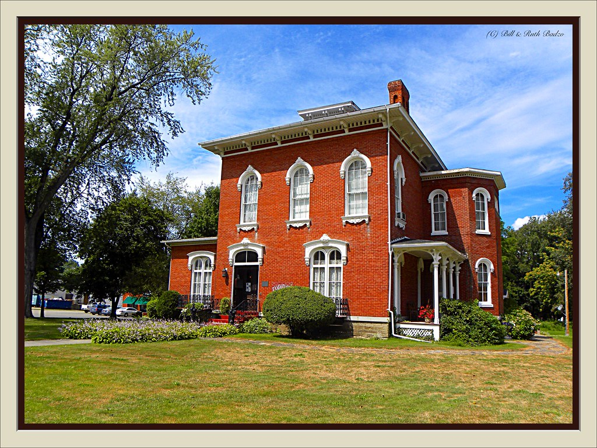
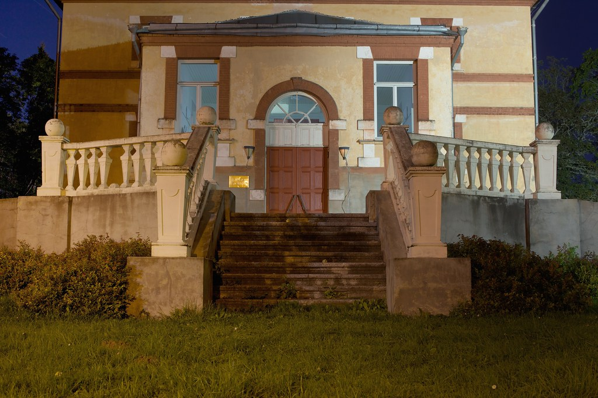
Não existe resposta parcialmente certa. A ficha de acusação pede um nome, e a casa inteira depende dele: a viúva que herdaria tudo, o filho endividado, a governanta que serviu trinta anos, o sócio que desviava, a secretária grávida — e o médico que jantou com todos e, no dia seguinte, assinou o atestado de óbito do amigo.
Quando fecharem a ficha, abram o arquivo Caso_Mansao_Blackwood_SOLUCAO.pdf. Ele traz a linha do tempo real, a chave completa, a conta das cápsulas, a lista das mentiras e a explicação de cada etapa.
Se erraram o culpado
Voltem ao Puzzle 3 e refaçam a conta das cápsulas. Se a conta estiver certa, o problema está na oportunidade: releiam a declaração de Clara sobre o corredor às 22h52 e comparem com a de Salles. A contradição está lá, escrita com todas as letras.
Se acertaram
Vocês acabaram de fazer em duas horas o que a polícia não fez em uma noite: perceber que o relógio não marca a hora da morte, que uma ferida que não sangra é uma ferida de mentira, e que o homem que assinou dois atestados de óbito na mesma família tinha um motivo que ninguém quis ver.
Créditos
Caso original para dois jogadores. Fotografias de acervo livre (Openverse/Flickr). Projetado para impressão em A4, frente e verso. Duração média: 2h a 2h30.
Aviso
Este dossiê contém descrições de morte, veneno e adultério. Ficção. Nenhuma das instituições, pessoas ou endereços citados existe.